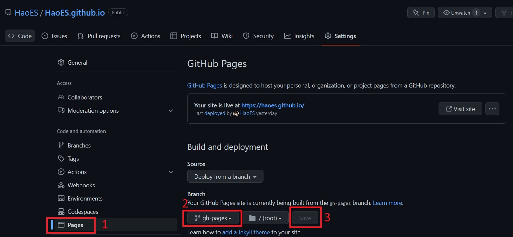
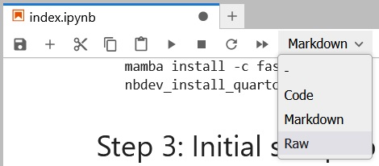

I’ve had a complex relationship with blogging. I’ve always wanted to blog but found it too much of a hassle.
Then I stumbled upon this post and decided to start my own blog documenting my journey as a Machine Learning enthusiast.
This blog will principally be a way for me to digest what I’ve learned (the best way of learning is teaching), share my thoughts and the projects I do.
I had two main choices for blogging, the first is Medium and the second is through Github Pages.
For no explainable reason I never liked Medium maybe because of the annoying reading limit it has when it asks you to connect (I hold grudges easily). As for Github Pages, I found Jekyll too much of a pain to deal with, too lazy to learn its intricacies.
Fortunately this year I decided to start the famous fast.ai course and Jeremy kept talking about Quarto and how it generates blog posts from Jupyter Notebooks. I also stumbled upon this blog of a fellow fast.ai student and used his posts to create my own blog.
So let me share with you How I did it:
Step 1: Create a new GitHub repo
Quarto is using GitHub Pages. So first you need to create a repository for your blog:
Follow steps 1 and 2 on the GitHub Pages homepage for the initial setup.
> Note: The default recommendation for the repo is <your username>.github.io. Apprently you can choose anything else you want, but I had issues with that, so to be safe just use the recommendation.
You now have an empty repo with maybe (if you checked the box) just a README.md file.
Now we need to clone our repo to our local machine using the command in terminal:
git clone git@github.com:<your-username>/<your-username>.github.io.git
Now we need to two more steps to finalize our repo creation:
- Create a new branch called gh-pages. - Set the new branch as the branch for GitHub Pages. In your repo, navigate to Settings -> Pages. and Change main to gh-pages, don’t forget to click save.

Step 2: Installing Quarto
I am currently working on a Windows 10 machine and I am using WSL (Ubuntu 20.04).
As I said I am currently doing the fast.ai course, so I am using mamba
I highly recommend that you use mamba it’s faster than conda, to know more about it check the mamba user guide
Installing Quarto in WSL
to install Quarto in WSL (or Ubuntu) via nbdev use:
mamba install -c fastchan nbdev
nbdev_install_quartoStep 3: Initial setup to publish your fist blog post
You are now ready to publish your first blog post!
In the command line, navigate to the directory of your repo, and run the following commands, and the example content for the Quarto blog should be published to your repo.
quarto create-project --type website:blog
quarto publish gh-pagesOnce done, you can consult your blog at: https://<your_username>.github.io/
For some more background on what is happening with these two commands, please refer to this this page (choose “Terminal”) and this page.
Now that your website is online, it’s time to write your own first post.
To do this navigate to the posts directory and create a new folder ex. Why-blogging.
Within this folder, create a notebook called index.ipynb.
Now make sure the first cell is in RAW and fill it with the metadata related to your post like this:
---
title: "Hello World"
author: "Your Name"
date: "2023-01-01"
---
Now republish your blog:
quarto publish gh-pagesVoilà, you just published your first blog post, Congratulations!
Step 4: Backing up your blog
When you run quarto publish gh-pages, your blog posts are rendered, and only those rendered versions are pushed to git in branch gh-pages.
Your actual notebooks are not uploaded to GitHub.
Also any config you make to the blog etc. is uploaded in the rendered versions only. So if something were to happen to your local files, your work would be lost.
Therefore, I would recommend to also upload the “source”-files to GitHub (in the main branch):
First, make sure you are on the main branch: git checkout main
Then navigate to the directory of your blog your_username.github.io
Now use the following commands to push all the source files of your blog to the main branch:
git add .
git commit -m "updated source files"
git pushNow your source files are in the main branch and your rendered blog files are in the gh-pages branch, everything is good!
Additional Steps:
You can edit the following files with your favorite text editor to customize your blog:
_quarto.yml
about.qmd
index.qmdIf you want to customize your blog further please refer to this very extensive blog post
Conclusion:
Setting up the blog is simple and straight forward, and creating new posts is easy and intuitive thank to the support for Jupyter Notebooks.
Good luck on your journey!